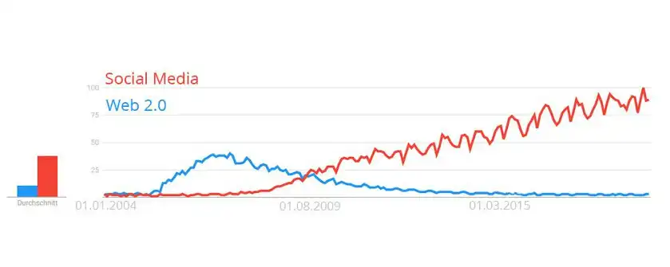

Grundlagen Social Media 2
Social Media Grundlagen
Weiter im Lehrgang
Übersicht Lehrgang
Gruppen, Zugehörigkeiten und deren Bedeutung
Selbstbewusstes Auftreten und das Selbstbewusstsein selbst, können wir Menschen nur entwickeln, wenn wir Gruppen angehören. Wir müssen Vergleiche ziehen und somit unsere eigene Position innerhalb der Gruppen abschätzen. Ist der Mensch in einer Gruppe gut verankert und akzeptiert, ist dies für ihn die Rückmeldung aus dieser Gruppe, dass er einiges richtig macht. Tut er Dinge die der Gruppe schadet, wird er ausgestoßen. Das sind die ursprünglichen Maßstäbe für den Menschen, sich selbst besser zu sehen.
Ein Neuankömmling aus einer anderen Gruppierung muss sich einfinden und anpassen. Das ist eine angeborene Fähigkeit des Menschen, die Anpassungsfähigkeit. Unser Verhalten ist darauf ausgerichtet sich sozial anzupassen. Es ist wichtig für uns positiv gesehen und angenommen zu werden. Zuspruch zu erhalten ist extrem wichtig für Menschen, auch das ist angeboren. Hat man sich in der Steinzeit nicht in die Gruppe einfügen können, bekam man vom erlegten Gnu nichts ab und verhungerte, wenn man Pech hatte.
Heute verhungert man nicht, wenn man auf dem Schulhof wegen der falschen Schuhe ausgelacht wird. Aber es nagt so sehr, dass man für die richtigen Treter vieles in Kauf nimmt. Diese und andere sozialen Bedürfnisse ermögliche erst unser Leben. Wettkämpfe würden gar nicht stattfinden, wenn der Sieger nicht gefeiert würde. Der Sieger läuft mit Stolz geschwellter Brust vor dem Publikum auf und ab, damit ihn auch jeder sehen kann. Das wird immer so bleiben und das macht das Leben auch so schön und interessant.
Verlieren ist nicht schön, gibt dir aber oft den Ansporn besser zu werden und ohne Verlierer gibt es auch keinen selbstbewussten Gewinner, der bereit ist, dem Säbelzahntiger eine mit dem Knüppel überzuhelfen. Es ist also wichtig zu Gewinnen und zu Verlieren. Anerkennung aus der Gruppe ist der Motor des Gewinnens.
Die Entstehung des Internets
Wir nutzen das Internet nicht nur, um Informationen zu sammeln, zu lesen oder zum Nachschlagen. Seit Web2.0, also seit YouTube, Facebook, Twitter und Co. nutzen wir das Internet um unserer eigenen Stimme Gehör zu verschaffen. Wir nutzen das Netz um uns zu organisieren, zum reden und um gleiche Interessen zu vertreten. Menschen bilden sich Meinungen über Produkte, Firmen und Menschen. Auch lassen wir unsere Meinung bilden. Alles was wir dort tun kann man als die Befriedigung unserer sozialen Bedürfnisse zusammenfassen. Für die meisten Menschen ist das Internet etwas ganz normales und alltägliches.
Und für Menschen die ab den 90ern auf dieser Welt wandeln, scheint das Internet schon immer da gewesen zu sein. Besonders alt ist das Netz aber noch gar nicht. Die Grundlagen des Internets wurden Mitte der 1950er Jahre gelegt und die erste Website im WWW wurde 1990 von Tim Berners-Lee online gestellt. Tim erfand auch HTML, http, die URL und den ersten Webserver. Mit HTML und der ersten Online-Schaltung seiner Website, begründete er das WWW, das World Wide Web.
Bis 2001 war das Internet eine Einbahnstraße und man konnte nicht an Webseiten mitwirken, sondern nur Webseiten ansehen. Das ist aktuell 19 Jahre her, also vergleichbar kurz. Es war der Beginn des heute so bekannten Web 2.0. Die Begründer des Web 2.0 waren hier WordPress, Wikipedia und MySpace und den Begriff Web 2.0 brachte damals Tim O‘Reilly ins Spiel. Da sich das Internet auf vielen Computern, auf der ganzen Welt befindet, war die Wandlung zum Web 2.0 kein Sprung, sondern viel mehr wie eine Evolution. Die vielen Teile entwickelten sich zu verschiedenen Zeitpunkten in die heutige Richtung.
Das Internet entwickelt sich ständig weiter und wir werden noch einiges Erleben. Es ist nicht mehr statisch und durch das Mitmachen vieler Menschen hochdynamisch. Web 2.0 war in den Suchmaschinen ein wichtiger Begriff, bis dieser Anfang 2008 vom Begriff "Social Media" in den Schatten geschoben wurde.
Entwicklung Digital Social Media
Durch Social Media ist die Befriedigung sozialer Bedürfnisse zum Teil einfacher geworden. Wir können leichter neue Menschen kennenlernen, Gruppen bilden und Meinungen tauschen. Auch können wir Beziehungen aller Lebenslagen bis hin zum Finden neuer Lebenspartner organisieren. Interaktion ist nun weltweit kein Problem. Informationen gehen in Sekunden um die Welt und keine bleibt mehr verborgen. Das Internet hat keine neuen sozialen Bedürfnisse geschaffen. Die Bedürfnisse selbst, wie Anerkennung, Liebe, Mitteilungsfreude, Kritik, Reden, Protzen, im Mittelpunkt stehen haben sich nicht verändert.
Die menschliche Psychologie und das menschliche Verhalten passt sich bis zu einem gewissen Punkt an, aber das Grundprogramm hat sich seit dem Höhlenmenschen wenig verändert. Nur die Art wie wir uns in den Mittelpunkt stellen, hat sich verändert.
Es gibt viele Menschen die sagen, dass sie gar nicht im Mittelpunkt stehen wollen. Das glaube ich nicht immer. Wenn jemand im Forum eine Frage stellt, will jeder die Frage zuerst beantworten. Aber warum? Weil er dem anderen tatsächlich helfen will? Oder ist es vielmehr der Ansporn, dass alle anderen sehen können, dass er zuerst geholfen hat?
Social Media ist angekommen
In dieser Grafik kannst du gut die Suchgewohnheiten im Bezug auf Web 2.0 und Social Media ablesen:

Die Verschiebung der Suchinteressen kannst du außerdem bei Google Trends ganz gut vergleichen. Google Trends Suchvergleich Social Media und Web2.0.